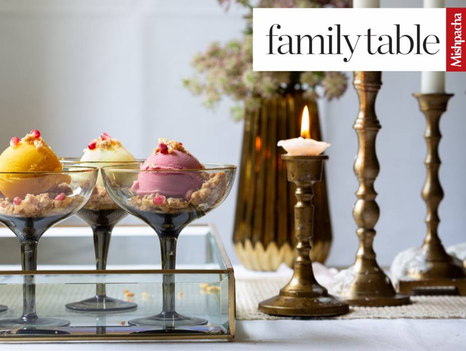
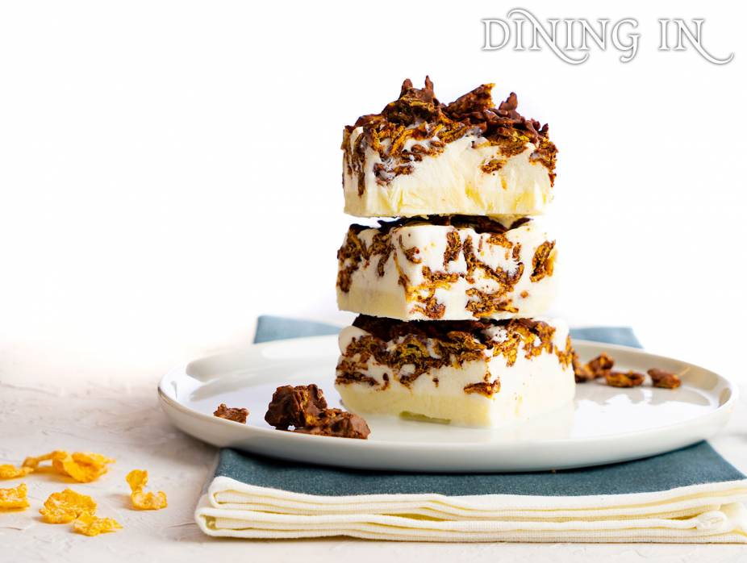

All the little pumpkins in your family will be clamoring for this ice cream...as will the adults.
Difficulty: Easy
Cooking and Prep: 20 min
Serves: 8
Allergies: Containes DAIRY, NUTS
Ingredients
Main Ingredients
1 quart vanilla ice cream, softened
1 cup canned pumpkin puree
1/4 teaspoon pumpkin pie spice
caramel sauce, to drizzle
2 Viennese crunch bars, chopped
Prepare the Pumpkin Ice Cream
In a blender, combine ice cream, pumpkin and pumpkin pie spice until well blended. Return mixture to the ice cream container and refreeze until ready to serve.
Scoop ice cream into a bowl or glass and drizzle with caramel sauce. Sprinkle with Viennese crunch.

Sorbet with Rice Krispy Crunch
I love hosting, especially family, and I’ll patchkeh over new appetizers and side dishes with a bunch of components until my back aches. But something about the thought of making dessert just fills me with dread. This one is as easy as it gets!
Difficulty: Easy
Cooking and Prep: 30 min
Serves: 8
Allergies: Containes GLUTEN, WHEAT
Ingredients
Sorbet
2 containers of your favorite sorbet
1/2 cup pomegranate arils
Rice Krispy Crunch
1 cup flour
1/3 cup brown sugar
1/2 cup (1 stick) margarine
1 cup Rice Krispies
To Make the Crunch
Preheat oven to 350 degrees Fahrenheit (175 degrees Celsius).
In a medium bowl, combine flour, brown sugar, and margarine. Pinch together until it has the texture of wet sand.
Carefully stir in the Rice Krispies. Spread the mixture out on a lined baking sheet so it’s crumbly and bake for 20 minutes. Cool and store in a bag until ready to use.
To Serve
Scoop out sorbet. Top with crunch and pomegranate arils. Voila!

Secret Ice Cream Surprise
Wow! Rich and creamy, unlike anything else.
Difficulty: Easy
Cooking and Prep: 30 min
Serves: 6
Allergies: Containes DAIRY, PEANUTS, GLUTEN, WHEAT
Ingredients
Main Ingredients
1/2 gallon vanilla ice cream (dairy or parve)
2 bars Swiss chocolate (dairy or parve)
1 tablespoon Peanut Butter
1 cup Frosted Flakes cereal
Prepare the Ice Cream Surprise
Remove ice cream from freezer and melt completely.
Melt chocolate and peanut butter in a double boiler.